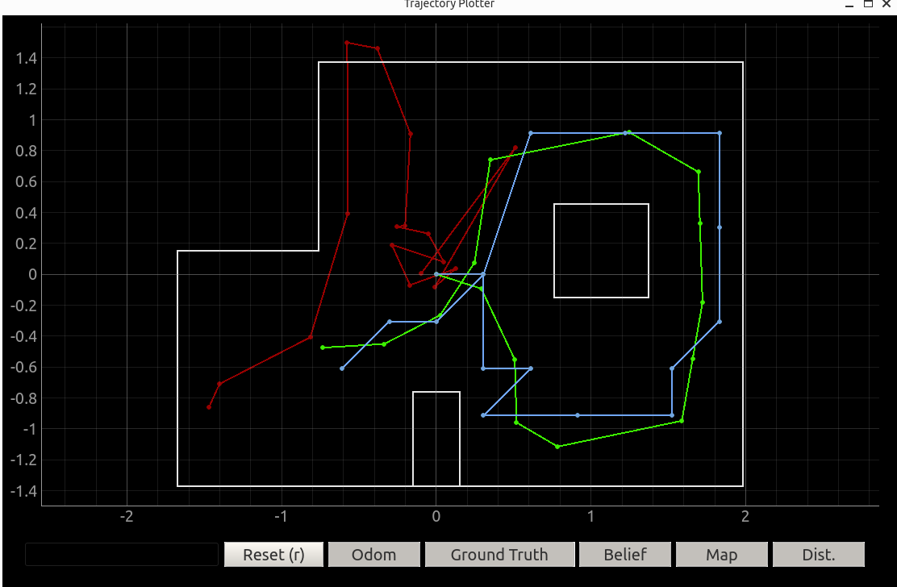
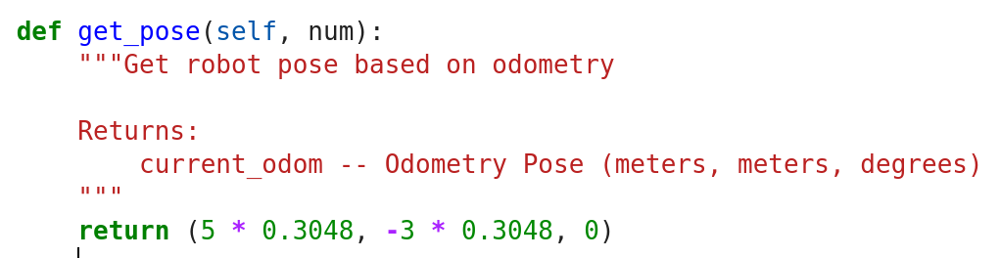
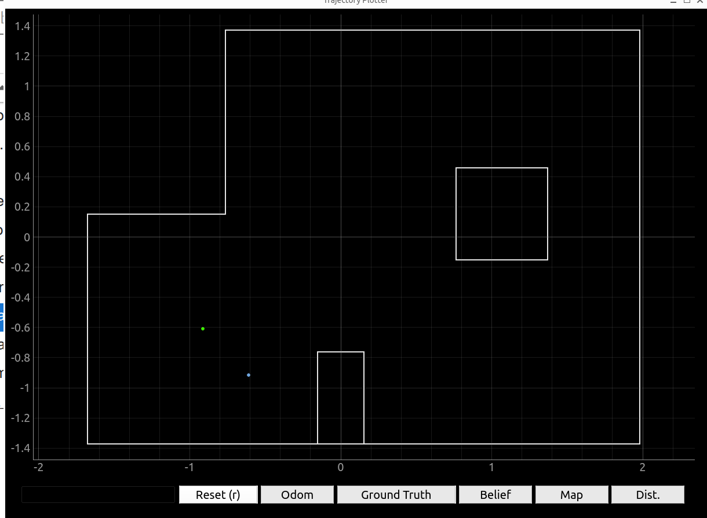
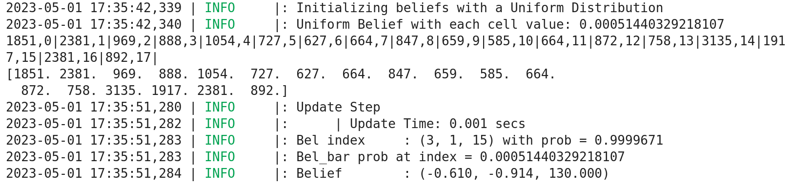
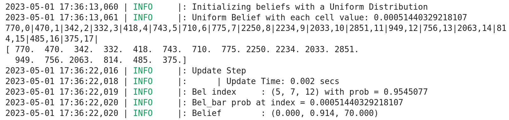
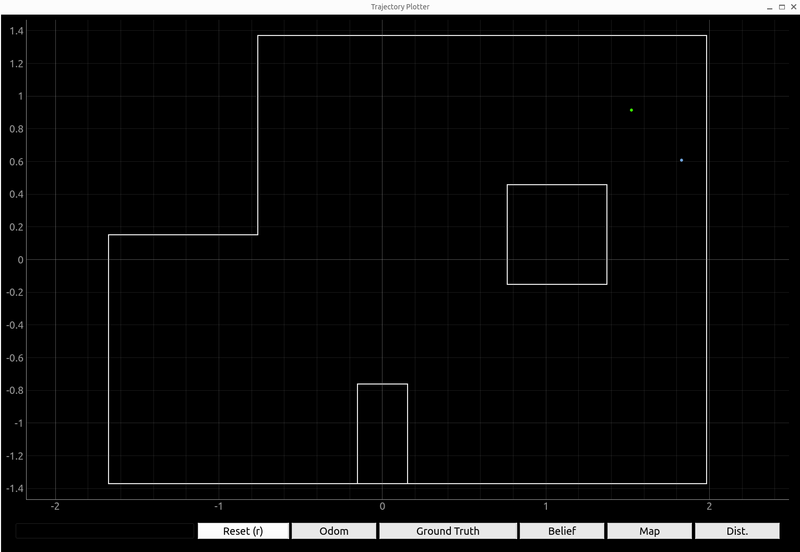
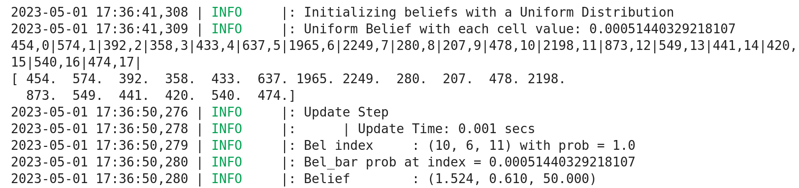
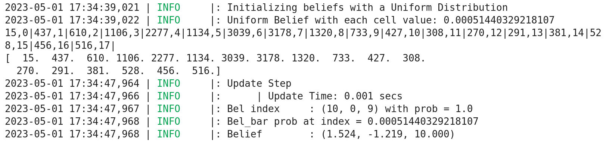

In lab 10, I have learnt about implementing Bayes filter to achieve grid localization of the robot in the simulator. The results of Bayes filter estimation is shown as the blue line in the plot below, while the green line is the ground truth and the red line is the odometry reading. It has been shown that the estimated trajectory pretty much follows the ground truth well with acceptable errors.
 Grid Localization in Simulator
Though everything happened in lab 10 using simulator has demonstrated good results, I still need to implement Bayes filter algorithm on my real robot, run it in the area similar to the one on simulator and conduct robot localization, so that to verify its performance in the real world.
The localization task performed in this lab is simplified. The robot is mannually placed at the the four spots in the area, and for each spot, the robot will spin for 360 degrees while collecting ToF distance measurements for every 20 degrees. Then the collected distance measurements are sent to laptop and hence robot localization can be performed by feeding these data to Bayes algorithm. Since it has been shown in previous lab that the prediction step of Bayes filter is not accurate enough for some places in the area, in this lab only the update step is used to estimate the location of the robot.
Lab Task: Grid Localization
Though the Bayes filter algorithm is performed on the laptop, it requires the distance data to conduct effective estimation. Hence some new functions are defined on both Artemis side and laptop side.
Robot Implementation (Artemis side)
To meet the demands of this lab, some functions are redefined on the Artemis side so that to transmit the data more effectively:
- spin_control: This function is basically modified from lab 9 when the distance measurements are needed for mapping task. The robot is set to spin counter-clockwise for 360 degrees and gets ToF distance measurements every 20 degrees. The data are stored in the
frontDistarray. The function also stores time of measurement and angles of measurement in two arrays respectively. - send_data: The function requires two arguments telling the type of retrieved data and the index of the data in the corresponding data type of array. It needs to be noticed that for each call of this function, it only send one data from the specified array.
The reason that I redefined the send_data function instead of using the old version which is based on event handler (callback function) in Python is that since both data collecting function and data sending function are both called in the same Python function on laptop side, the async feature in Python must be added so that the event handler can work properly to get all the transmitted data once it is available, otherwise the code may continue directly before all the measurement data has been fully transmitted by callback function and the transmission process may be suspended. In that case, the Bayes filter algorithm can perform badly based on incomplete dataset.
By implementing this newly defined send_data function in a for loop on the laptop side, the code will be blocked at the loop util all the measurement data has been transmitted completely.
The code snippet for these functions are shown as below:
Artemis Side Redefined FunctionsPython Implementation (Computer side)
Basically the Artemis side defined function are called in the perform_observation_loop function in the class RealRobot. For each spot in the area, the function is called to return the 360 degrees spinned distance measurement data, so that the Bayes filter algorithm can update the location estimation based on these data.
The code snippet for this function is shown as below where, as mentioned before, the send_data function is called in a for loop to retrieve the 18 distance data one by one.
Localization at 4 Spots
After the functions are defined properly, the localization task is conducted on the four specified spots in the area: (-3, -2, 0), (0, 3, 0), (5, 3, 0), (5, -3, 0), which are the same spots as in lab 9. It needs to be noticed that the Bayes Filter algorithm only prints the believed robot location in blue point, while to print the ground truth in green point on the plotter, the get_pose function needs to be implemented for each of the four spots, telling the plotter that the exact true location the spots are supposed to be. The code below shows an example if the spot location is (5, -3), where the unit of this coordinate is the number of tiles. To convert the unit to meter which matches the plotter unit, the coordinate needs to be multiplied with 0.3048.
 Ground Truth Location
Spot (-3, -2, 0)
From the plot below we can see that the Bayes Filter estimated spot (blue point) is quite close to the ground truth (green point). However, since the plotter map only shows the x and y coordinates, it is better to check the Bayes Filter output to see the odometry information and the probability it predicts.
 Bayes Filter Localization for Spot (-3, -2, 0)
The plot below shows the Bayes Filter LOG message where the fifth line gives the distance measurements obtained from the front ToF sensor, the Bel_index line gives the index of predicted points and its probability which is 1.0 here, indicating that the algorithm is confident about the robot's location prediction, though there is actually an error between estimation and ground truth. Finally, the last line gives the predicted coodinates and angle state of the robot. The first two digits are x and y coordinate in the map and its unit is in meters, to compare it with the spot coordinate more intuitively, just divide them by 0.3048. The third digit, angle, is 130 degree which is abit far away from the initial state (0 degree) after 360 degrees of spinning. The error might result from my open loop control which can make robot spin more than expected.
 Bayes Filter Message for Spot (-3, -2, 0)
Spot (0, 3, 0)
The plot for this spot demonstrates a wonderful estimation made by Bayes algorithm since the predicted point is completely overlapped with the ground truth point.
Bayes Filter Localization for Spot (0, 3, 0)
The result is verified by the Bayes algorithm output, showing that the probability is over 0.95 and the coordinate after conversion is almost same as (0, 3). However, the angle estimation error is still a bit high.
 Bayes Filter Message for Spot (0, 3, 0)
Spot (5, 3, 0)
The plot below for spot (5, 3) also gives an estimation with a small error. Both x and y coordinates are off by on grid approximately. It is likely that the distance measurement is affected by the obstacle there, meanwhile, as the left side and bottom side walls are far away from the spot, the long distance measurement can result more errors.
 Bayes Filter localization for Spot (5, 3, 0)
According to the Bayes output, the angle estimation is 50 degrees which is a little better than previous estimation but still may be affected by my control system.
 Bayes Filter Message for Spot (5, 3, 0)
Spot (5, -3, 0)
The plot below shows that the there is an error on y-axis between estimation and ground truth. It is highly possible resulted from the inaccurate long distance measurement fron the spot to the top wall.
Bayes Filter localization for Spot (5, -3, 0)
The message below gives an estimated final angle of 10 degrees which is quite close to supposed 0 degree.
 Bayes Filter Message for Spot (5, -3, 0)
To conclude, the spots with the requirement of longer distance measurement are more likely get an Bayes localization with an error, such as (5, -3). It is because the ToF sensor is not stable when measuring long distance, and the reading can be noisier, while given the finite resolution of the ToF reading, it is likely that an noisy reading can be collected during the measurement process. Besides, from lab 10 I have learnt that the distance measurements from a spot closer than obstacles may be negatively affected by the existence of the obstacle as well. The complexity of the environment can affect the performance of the Bayes Filter in robot grid localization. With many obstacles or other features that can obstruct the robot's view or affect sensor readings on the robot, the filter may struggle to produce accurate estimates of the robot's position. This may well explain the error appears on the spot (5, 3) and (-3, -2).
Texts and Videos by Zhongqi Tao